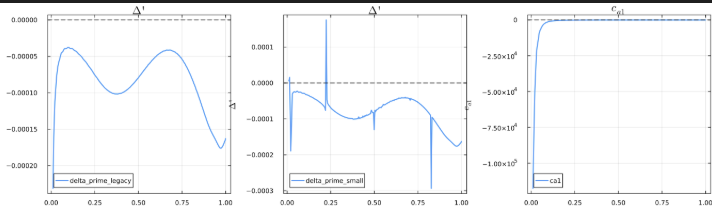
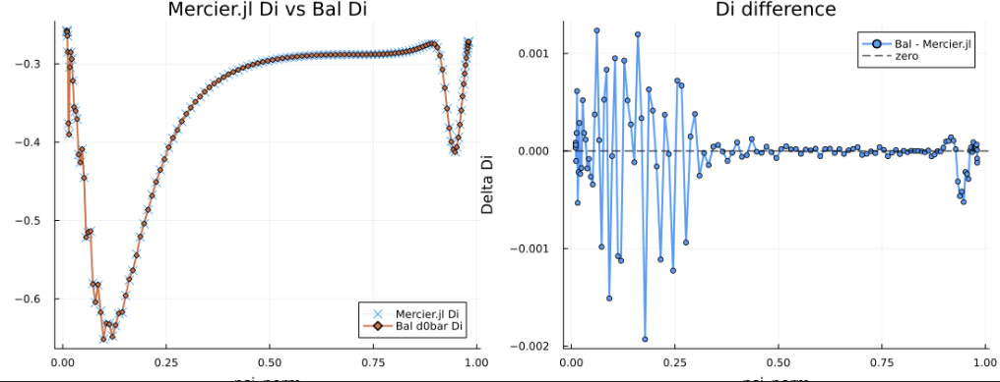

Ballooning and Mercier Local Stability
This note describes the physical and mathematical foundations of Bal.jl, which computes local Mercier and high-$n$ ballooning stability. It covers the ballooning-mode equation, the asymptotic boundary treatment, and the local perturbation framework used to generate the $s$-$\alpha$ diagram.
Ballooning-mode equation
Ballooning representation
In a tokamak equilibrium, physical quantities are periodic in the poloidal angle $\theta$ and toroidal angle $\zeta$. The perturbation function $\varphi$ satisfies
\[\varphi(\psi, \theta, \beta) = \varphi(\psi, \theta, \beta + 1) = \varphi(\psi, \theta + 1, \beta - q),\]
where $q$ is the safety factor.
Ballooning modes have long wavelengths along magnetic field lines and short wavelengths perpendicular to the field. They are represented using a covering-space function $\hat{\varphi}$, defined on $-\infty < \theta < \infty$:
\[\varphi(\psi, \theta, \beta) = \sum_{l=-\infty}^{\infty} \hat{\varphi}(\psi, \theta - l) \exp[-2\pi i n(\beta + lq)].\]
Here
\[\beta = \zeta - q\theta + \int q'\theta_0(\psi)\,d\psi\]
is the Clebsch coordinate. The wave-number vector contains a secular term from the magnetic shear $q'$:
\[|\nabla\beta|^2 = |\nabla\zeta - q\nabla\theta|^2 + q'^2(\theta-\theta_0)^2|\nabla\psi|^2 - 2q'(\theta-\theta_0)(\nabla\zeta-q\nabla\theta)\cdot\nabla\psi.\]
Ideal marginal ballooning equation
At the stability boundary, $\gamma = 0$. Variation of the ideal-MHD energy principle gives the ballooning ODE
\[\mathbf{B}\cdot\nabla \left( \frac{|\nabla\beta|^2}{B^2} \mathbf{B}\cdot\nabla\hat{\varphi} \right) + 2\frac{P'}{\chi'}\kappa_w\hat{\varphi} = 0,\]
where $\chi$ is the poloidal flux and $P'$ is the pressure-gradient term used by the local-stability equations. Written using the Jacobian $\mathcal{J}$,
\[\frac{\chi'}{\mathcal{J}}\frac{\partial}{\partial\theta} \left( \frac{|\nabla\beta|^2}{B^2} \frac{\chi'}{\mathcal{J}} \frac{\partial\hat{\varphi}}{\partial\theta} \right) + 2\frac{P'}{\chi'}\kappa_w\hat{\varphi} = 0.\]
Bal.jl converts this to a first-order matrix equation,
\[\frac{\partial\mathbf{u}}{\partial\theta} = \mathbf{L}\mathbf{u}, \qquad \mathbf{u} = \begin{pmatrix} \hat{\varphi} \\ \dfrac{|\nabla\beta|^2}{B^2} \dfrac{\chi'}{\mathcal{J}} \dfrac{\partial\hat{\varphi}}{\partial\theta} \end{pmatrix},\]
with
\[\mathbf{L} = \frac{\mathcal{J}}{\chi'} \begin{pmatrix} 0 & \dfrac{B^2}{|\nabla\beta|^2} \\ -2\dfrac{P'}{\chi'}\kappa_w & 0 \end{pmatrix}.\]
Curvature decomposition
The instability drive is the projected curvature
\[\kappa_w \equiv \frac{\boldsymbol{\kappa}\times\mathbf{B}}{B^2}\cdot\nabla\beta.\]
Using $\nabla\beta = \nabla\zeta - q\nabla\theta - q'\theta\nabla\psi$, the curvature separates into non-secular and secular pieces:
\[\kappa_w = \kappa_n - q'\theta\kappa_s,\]
where
\[\kappa_s \equiv \frac{\boldsymbol{\kappa}\times\mathbf{B}}{B^2}\cdot\nabla\psi = -\frac{\pi f}{\mathcal{J}} \frac{\partial}{\partial\theta} \left(\frac{1}{B^2}\right).\]
This decomposition is the main structure used to assemble the ballooning coefficient matrix.
Asymptotic basis and Mercier exponent
In the $\theta\to\infty$ limit, the coefficient matrix diverges because $|\nabla\beta|^2 \simeq q'^2\theta^2|\nabla\psi|^2$. Bal.jl applies the canonical transformation
\[\mathbf{R} = \operatorname{diag}(\theta^{-1/2}, \theta^{1/2})\]
and solves
\[\frac{\partial\mathbf{v}}{\partial\theta} = \mathbf{M}\mathbf{v}, \qquad \mathbf{M} = \begin{pmatrix} \dfrac{1}{2\theta} & \dfrac{\mathcal{J}}{\chi'} \dfrac{B^2\theta}{|\nabla\beta|^2} \\ -\dfrac{\mathcal{J}}{\chi'} \dfrac{2P'\kappa_w}{\chi'\theta} & -\dfrac{1}{2\theta} \end{pmatrix}.\]
To keep the lowest-order matrix finite, the code applies
\[\mathbf{S} = \begin{pmatrix} 1 & 0 \\ \sigma & 1 \end{pmatrix}, \qquad \sigma = -\frac{2\pi f P'q'}{\chi'^2 B^2}.\]
The transformed matrices $\mathbf{N}_k = \mathbf{S}^{-1}\mathbf{M}_k\mathbf{S}$ enter the recurrence relation
\[\frac{\partial\mathbf{w}^{(k+1)}}{\partial\theta} = [\mathbf{N}_0-(\alpha+k)\mathbf{I}]\mathbf{w}^{(k)} + \sum_{l=1}^{k}\mathbf{N}_l\mathbf{w}^{(k-l)}.\]
The Mercier exponent $\alpha$ follows from the zeroth-order solvability condition:
\[\det[\langle\mathbf{N}_0\rangle-\alpha\mathbf{I}] = 0, \qquad \alpha = \pm\sqrt{-D_I}.\]
Equivalence with the surface-average Mercier formula
The previous Mercier.jl evaluated the Mercier index from flux-surface averages. The two routes are mathematically equivalent: they are different reductions of the same large-$\theta$ ballooning solvability condition.
Let the flux-surface average used by the old implementation be
\[\langle X\rangle_{\mathrm{fs}} \equiv \int_0^1 \frac{\mathcal{J}}{V'} X(\theta)\,d\theta,\]
and define
\[A_1 = \left\langle\frac{B^2}{|\nabla\psi|^2}\right\rangle_{\mathrm{fs}}, \qquad A_2 = \left\langle\frac{1}{|\nabla\psi|^2}\right\rangle_{\mathrm{fs}},\]
\[A_3 = \left\langle\frac{1}{B^2}\right\rangle_{\mathrm{fs}}, \qquad A_4 = \left\langle\frac{1}{B^2|\nabla\psi|^2}\right\rangle_{\mathrm{fs}}, \qquad A_5 = \left\langle B^2\right\rangle_{\mathrm{fs}}.\]
Below, an overbar denotes the period integral used to form the Bal.jl $\bar{d}_0$ matrix:
\[\overline{X} \equiv \int_0^1 X(\theta)\,d\theta.\]
With $F = 2\pi f$, the old code evaluated
\[T = \frac{F P' V'}{q'\chi'^3} A_2,\]
and then
\[D_I^{\mathrm{avg}} = -\frac14 + T(1-T) + P'\left(\frac{V'}{q'\chi'^2}\right)^2 A_1 \left[ P'\left(A_3+\frac{F^2}{\chi'^2}A_4\right) - \frac{V''}{V'} \right].\]
This is the surface-average Mercier expression that appeared in the old Mercier.jl and, temporarily, in the earlier resistive_interchange helper. The associated GGJ resistive-interchange quantity used
\[H = \frac{F P' V'}{q'\chi'^3} \left( A_2 - \frac{A_1}{A_5} \right), \qquad D_R = D_I + \left(H-\frac12\right)^2.\]
The determinant route starts from the same ballooning equation, takes the large-$\theta$ limit, applies the $\mathbf{R}$ and $\mathbf{S}$ transformations, and obtains the periodic lowest-order system
\[\frac{\partial\mathbf{w}^{(1)}}{\partial\theta} = (\mathbf{N}_0-\alpha\mathbf{I})\mathbf{w}^{(0)}.\]
Solvability requires the mean operator to have a null vector:
\[[\overline{\mathbf{N}_0}-\alpha\mathbf{I}]\mathbf{w}^{(0)}=0.\]
The transformed matrix is traceless by construction,
\[\operatorname{tr}\overline{\mathbf{N}_0} = 0,\]
so the characteristic equation reduces to
\[\alpha^2 + \det\overline{\mathbf{N}_0} = 0.\]
Comparing this with the Mercier exponent definition $\alpha^2 = -D_I$ gives
\[D_I = \det\overline{\mathbf{N}_0}.\]
The reduction can be written explicitly. For the unperturbed Mercier scan, $\mathbf{N}_0$ has the code form
\[\mathbf{N}_0(\theta) = \begin{pmatrix} \frac12 + M_{12}\sigma & M_{12} \\ M_{21}-\sigma-M_{12}\sigma^2 & -\frac12-M_{12}\sigma \end{pmatrix},\]
where
\[M_{12} = \frac{\mathcal{J}}{\chi'} \frac{B^2}{q'^2|\nabla\psi|^2}, \qquad M_{21} = -2\frac{\mathcal{J}}{\chi'^2}P'\kappa_n, \qquad \sigma = -\frac{F P' q'}{\chi'^2 B^2}.\]
The averaged matrix can therefore be written as
\[\bar{d}_0 \equiv \overline{\mathbf{N}_0} = \begin{pmatrix} \frac12+B & A \\ K & -\frac12-B \end{pmatrix},\]
with
\[A = \overline{M_{12}}, \qquad B = \overline{M_{12}\sigma}, \qquad K = \overline{M_{21}-\sigma-M_{12}\sigma^2}.\]
The first two averages are direct:
\[A = \frac{V'}{q'^2\chi'}A_1,\]
\[B = \overline{ \frac{\mathcal{J}}{\chi'} \frac{B^2}{q'^2|\nabla\psi|^2} \left( -\frac{F P' q'}{\chi'^2B^2} \right) } = -\frac{F P' V'}{q'\chi'^3}A_2 = -T.\]
For $K$, separate the three pieces:
\[K = \overline{M_{21}} -\overline{\sigma} -\overline{M_{12}\sigma^2}.\]
The last term is also direct:
\[\overline{M_{12}\sigma^2} = \overline{ \frac{\mathcal{J}}{\chi'} \frac{B^2}{q'^2|\nabla\psi|^2} \frac{F^2P'^2q'^2}{\chi'^4B^4} } = \frac{F^2P'^2V'}{\chi'^5}A_4.\]
The remaining curvature combination reduces by the axisymmetric equilibrium identity used in the Mercier derivation:
\[\int_0^1 \left( 2\mathcal{J}\kappa_n - \frac{Fq'}{B^2} \right)d\theta = \frac{V'}{\chi'} \left( P'A_3 - \frac{V''}{V'} \right).\]
Using $M_{21}=-2\mathcal{J}P'\kappa_n/\chi'^2$ and $\sigma=-FP'q'/(\chi'^2B^2)$, this gives
\[\overline{M_{21}}-\overline{\sigma} = -\frac{P'}{\chi'^2} \int_0^1 \left( 2\mathcal{J}\kappa_n - \frac{Fq'}{B^2} \right)d\theta = -\frac{P'V'}{\chi'^3} \left( P'A_3 - \frac{V''}{V'} \right).\]
Therefore
\[K = -\frac{P'V'}{\chi'^3} \left[ P'\left(A_3+\frac{F^2}{\chi'^2}A_4\right) - \frac{V''}{V'} \right].\]
Now take the determinant:
\[\det\bar{d}_0 = \left(\frac12+B\right)\left(-\frac12-B\right)-AK.\]
Substituting $B=-T$ gives the first part of the old Mercier expression:
\[\left(\frac12-T\right)\left(-\frac12+T\right) = -\frac14+T(1-T).\]
Substituting $A$ and $K$ gives the second part:
\[-AK = \frac{V'}{q'^2\chi'}A_1 \frac{P'V'}{\chi'^3} \left[ P'\left(A_3+\frac{F^2}{\chi'^2}A_4\right) - \frac{V''}{V'} \right]\]
\[= P'\left(\frac{V'}{q'\chi'^2}\right)^2 A_1 \left[ P'\left(A_3+\frac{F^2}{\chi'^2}A_4\right) - \frac{V''}{V'} \right].\]
Thus the determinant route gives exactly
\[\det\bar{d}_0 = -\frac14 + T(1-T) + P'\left(\frac{V'}{q'\chi'^2}\right)^2 A_1 \left[ P'\left(A_3+\frac{F^2}{\chi'^2}A_4\right) - \frac{V''}{V'} \right] = D_I^{\mathrm{avg}}.\]
So, under the same normalization and exact equilibrium identities,
\[D_I^{\mathrm{det}} \equiv \det(\bar{d}_0) = D_I^{\mathrm{avg}}.\]
The implementation difference is numerical rather than physical. The old surface-average route evaluates the closed Mercier formula directly, while the new Bal.jl route constructs the same Mercier index from the averaged large-$\theta$ local-mode matrix. In finite-precision calculations the two can separate near the magnetic axis or other ill-conditioned surfaces because both forms contain factors such as $1/q'$ and $1/q'^2$. Away from those regions, they should agree to the accuracy of the equilibrium derivatives and surface quadrature.
The divergent big solution and decaying small solution have leading forms
\[\mathbf{u}_{\mathrm{large}}^{(0)} \simeq \begin{pmatrix} \theta^{\alpha-1/2} \\ \theta^{\alpha+1/2}(\sigma+w_{21}) \end{pmatrix}, \qquad \mathbf{u}_{\mathrm{small}}^{(0)} \simeq \begin{pmatrix} \theta^{-\alpha-1/2} \\ \theta^{-\alpha+1/2}(\sigma+w_{22}) \end{pmatrix}.\]
First-order asymptotic matching
The zeroth-order large-$\theta$ solution alone is not accurate enough at a finite integration boundary $\theta_{\max}$. Bal.jl therefore includes the first-order correction $\mathbf{w}^{(1)}$:
\[\frac{\partial\mathbf{w}^{(1)}}{\partial\theta} = (\mathbf{N}_0-\alpha\mathbf{I})\mathbf{w}^{(0)} = \tilde{\mathbf{N}}_0(\theta)\mathbf{w}^{(0)}.\]
The first-order solution is written as
\[\mathbf{w}^{(1)}(\theta) = \left(\int\tilde{\mathbf{N}}_0(\theta)\,d\theta\right)\mathbf{w}^{(0)} + \mathbf{c}^{(1)} \equiv \tilde{\mathbf{w}}^{(1)}(\theta) + \mathbf{c}^{(1)}.\]
The constant vector is fixed by the first-order solvability condition,
\[[\langle\mathbf{N}_0\rangle-(\alpha+1)\mathbf{I}]\mathbf{c}^{(1)} = - \left\langle [\mathbf{N}_0-(\alpha+1)\mathbf{I}] \tilde{\mathbf{w}}^{(1)}(\theta) + \mathbf{N}_1\mathbf{w}^{(0)} \right\rangle.\]
This gives the asymptotic boundary form
\[\mathbf{u}_{\mathrm{boundary}} \simeq \mathbf{R}\mathbf{S} \left( \mathbf{w}^{(0)} + \frac{1}{\theta}\mathbf{w}^{(1)}(\theta) \right).\]
Local thin-layer ordering
The $s$-$\alpha$ diagram scans local instability near a flux surface $\psi_b$ without recomputing the full equilibrium. A thin-layer parameter $0 < \mu \ll 1$ is introduced through
\[s = \frac{\psi-\psi_b}{\mu}, \qquad \frac{\partial}{\partial\psi} = \frac{1}{\mu}\frac{\partial}{\partial s}.\]
Profiles are expanded as background plus local perturbation,
\[P(\psi) = P^{(0)}(\psi) + \mu P^{(1)}(s) + \cdots, \qquad q(\psi) = q^{(0)}(\psi) + \mu q^{(1)}(s) + \cdots.\]
After differentiation, the $\mu$ amplitude cancels the $1/\mu$ derivative scale. Thus the derivative-level perturbations are order unity:
\[P_\psi = P_\psi^{(0)} + P_s^{(1)}, \qquad q_\psi = q_\psi^{(0)} + q_s^{(1)}.\]
The subscript $s$ therefore represents the promoted local derivative perturbation used as the practical scan variable in the $s$-$\alpha$ diagram. Retained first-order contributions are denoted by a superscript $[1]$; for example, $I_{\mathrm{per}}^{[1]}$ is the retained local periodic variation of the integrated shear.
Local $P'$ and $q'$ perturbations
Using the integrated-shear function
\[I_{\mathrm{tot}} = q'(\theta-\theta_k) + I_{\mathrm{per}},\]
the wave-number space and curvature are written
\[\left(\frac{|\nabla\beta|}{B}\right)^2 = \frac{1}{\chi'^2|\nabla\psi|^2} + \frac{|\nabla\psi|^2}{B^2}I_{\mathrm{tot}}^2,\]
\[\kappa_w = \frac{\boldsymbol{\kappa}\cdot\nabla\psi} {\chi'|\nabla\psi|^2} - \kappa_s I_{\mathrm{tot}}.\]
With
\[I_{\mathrm{tot}} = I_{\mathrm{tot}}^{(0)} + I_{\mathrm{tot}}^{[1]}, \qquad I_{\mathrm{tot}}^{[1]} = q_s^{(1)}(\theta-\theta_k) + I_{\mathrm{per}}^{[1]},\]
the retained order-unity perturbation terms are
\[\left(\frac{|\nabla\beta|^2}{B^2}\right)_{O(1),\mathrm{ret}} = \frac{|\nabla\psi|_0^2}{B_0^2} \left[ 2I_{\mathrm{tot}}^{(0)}I_{\mathrm{tot}}^{[1]} + \left(I_{\mathrm{tot}}^{[1]}\right)^2 \right],\]
\[\kappa_w^{[1]} = -\kappa_s^{(0)}I_{\mathrm{tot}}^{[1]}.\]
The cross term and nonlinear $(I_{\mathrm{tot}}^{[1]})^2$ term are retained in the matrix assembly rather than discarded by linearization.
$\mathbf{N}_0$ matrix construction
The lower-triangular element of the canonical transformation combines the local $P'$ and $q'$ perturbations:
\[\sigma = -\frac{2\pi f}{\chi_0'^2B_0^2} \left(P_\psi^{(0)} + P_s^{(1)}\right) \left(q_\psi^{(0)} + q_s^{(1)}\right).\]
The $(1,2)$ component of the asymptotic matrix responds to $q_s^{(1)}$:
\[(\mathbf{M}_0)_{12} = \frac{\mathcal{J}_0}{\chi_0'} \frac{B_0^2} {\left(q_\psi^{(0)}+q_s^{(1)}\right)^2|\nabla\psi|_0^2}.\]
The $(2,1)$ component uses the expanded non-secular curvature,
\[\kappa_n(\theta) = \kappa_n^{(0)}(\theta) + \kappa_s^{(0)}(\theta)q_s^{(1)}\theta_k - \kappa_s^{(0)}(\theta)I_{\mathrm{per}}^{[1]}(\theta),\]
which gives
\[(\mathbf{M}_0)_{21} = -\frac{2\mathcal{J}_0}{\chi_0'^2} \left(P_\psi^{(0)} + P_s^{(1)}\right) \left[ \kappa_n^{(0)}(\theta) + \kappa_s^{(0)}(\theta)q_s^{(1)}\theta_k - \kappa_s^{(0)}(\theta)I_{\mathrm{per}}^{[1]}(\theta) \right].\]
The final matrix $\mathbf{N}_0(\theta)=\mathbf{S}^{-1}\mathbf{M}_0(\theta)\mathbf{S}$ is period-averaged to form $\langle\mathbf{N}_0\rangle$ in the Mercier solvability equation.
$\mathbf{N}_1$ correction
The first-order asymptotic boundary condition requires the $O(\theta^{-2})$ matrix $\mathbf{N}_1$. In the large-$\theta$ limit, only the upper-right component of $\mathbf{M}_1$ remains:
\[\mathbf{M}_1(\theta) = \begin{pmatrix} 0 & a_1(\theta) \\ 0 & 0 \end{pmatrix},\]
where
\[a_1(\theta) = -2\frac{\mathcal{J}_0}{\chi_0'} \frac{B_0^2} {|\nabla\psi|_0^2\left(q_\psi^{(0)}+q_s^{(1)}\right)^3} \left[ I_{\mathrm{per}}^{(0)}(\theta) + I_{\mathrm{per}}^{[1]}(\theta) - \left(q_\psi^{(0)}+q_s^{(1)}\right)\theta_k \right].\]
Applying the $\mathbf{S}^{-1}$ transformation gives
\[\mathbf{N}_1(\theta) = a_1(\theta) \begin{pmatrix} \sigma & 1 \\ -\sigma^2 & -\sigma \end{pmatrix}.\]
Thus $\mathbf{N}_1$ is closed in terms of $I_{\mathrm{per}}^{[1]}$, $P_s^{(1)}$, and $q_s^{(1)}$. The $I_{\mathrm{per}}^{[1]}$ and $q_s^{(1)}$ terms control $a_1(\theta)$, while $P_s^{(1)}$ enters through $\sigma$.
Practical implementation in Bal.jl
Geometric curvature formula
The non-secular curvature calculation uses the geometric expression
\[\kappa_n^{(0)} = -\frac{1}{\mathcal{J}_0B_0} \frac{\partial}{\partial\psi} \left(\frac{\mathcal{J}_0B_0}{\chi'_0}\right) + \frac{1}{\mathcal{J}_0B_0} \frac{\partial}{\partial\theta} \left( \mathcal{J}_0 \frac{\mathbf{B}_0\cdot\nabla\theta\times\nabla\zeta}{B_0} \right) + \frac{2\pi f q'_0}{B_0^2\mathcal{J}_0}.\]
This avoids relying entirely on Grad-Shafranov identities, which can amplify numerical equilibrium errors near the edge or in other regions where the input equilibrium does not satisfy the Grad-Shafranov equation exactly.
Two-loop structure
The code separates the calculation into two loops to avoid repeatedly differentiating noisy geometric quantities.
- Loop 1: Use only unperturbed background quantities, such as $P'$ and $q'$, to precompute the base structural curvature $\kappa_n^{(0)}$.
- Loop 2: Insert the requested local perturbations, such as $P_s^{(1)}$, $q_s^{(1)}$, and $I_{\mathrm{per}}^{[1]}$. The code adds only the analytically derived algebraic perturbation ``\kappas^{(0)}qs^{(1)}\theta_k
- \kappas^{(0)}I{\mathrm{per}}^{[1]}`` to the precomputed
This preserves the perturbation structure while avoiding unstable repeated geometric differentiation.
$\theta_{\max}$ and Baloo.f-style matching
For large $\theta$, the wave-number factor behaves like a quadratic polynomial,
\[a_2\theta^2 + a_1\theta + a_0 = a_2\left(\theta+\frac{a_1}{2a_2}\right)^2 + \left(a_0-\frac{a_1^2}{4a_2}\right).\]
The residual scale is $c = a_0-a_1^2/(4a_2)$. To make the asymptotic approximation valid, the code chooses an integration boundary where the $\theta^2$ term dominates, using the scale $\sqrt{|c/a_2|}$. Because the shooting boundary is a single flux-surface quantity, Bal.jl evaluates this scale on the ballooning theta grid and uses the largest finite value on that surface. The base integration boundary is then capped as $\theta_{\max}=\min(16.5,10\max_\theta\sqrt{|c/a_2|})$.
Directly extracting $c_{a1}$ or $\Delta'$ from the small asymptotic solution is numerically fragile. The comparison below shows that the Baloo.f style, which sets the displacement to vanish at $\pm\theta_{\max}$ and computes $\Delta'$ from the resulting solution, gives the most stable continuous profile.

Bal.jl therefore adopts the Baloo.f-style boundary replacement for the ballooning $\Delta'$ calculation.
Ballooning angle and integral-gauge correction
The ballooning angle $\theta_k$ is the integration constant specifying where the total accumulated local shear is zero:
\[I_{\mathrm{tot}}(\theta_k) = 0.\]
In Bal.jl,
\[I_{\mathrm{tot}} = \left(q'^{(0)}+q_s^{(1)}\right)(\theta-\theta_k) + \left(I_{\mathrm{per}}^{(0)}(\theta) + I_{\mathrm{per}}^{[1]}(\theta)\right).\]
To satisfy the gauge exactly, the periodic shear functions are shifted so that they vanish at $\theta_k$:
\[I_{\mathrm{per}}^{(0)}(\theta) \leftarrow I_{\mathrm{per}}^{(0)}(\theta) - I_{\mathrm{per}}^{(0)}(\theta_k),\]
\[I_{\mathrm{per}}^{[1]}(\theta) \leftarrow I_{\mathrm{per}}^{[1]}(\theta) - I_{\mathrm{per}}^{[1]}(\theta_k).\]
This aligns the numerical implementation with the theoretical gauge used in the ballooning formulation.
locstab_fs outputs
Bal.jl now computes both the Mercier criterion and the ballooning $\Delta'$. The previous standalone Mercier.jl path can therefore be removed from the local stability calculation. The comparison below shows agreement between the previous Mercier calculation and the new Bal.jl calculation.

The local-stability output now stores ballooning $\Delta'$ in the fourth locstab_fs entry. In the HDF5 output this is written as LocalStability/ballooning_Delta_prime, distinct from the tearing $\Delta'$ outputs under SingularSurfaces/ and PerturbedEquilibrium/SingularCoupling/.
API
GeneralizedPerturbedEquilibrium.LocalStability.ballooning_alpha_boundaries — Method
ballooning_alpha_boundaries(plasma_eq; theta_k=0.0, max_alpha_scale=8.0, n_scan=24, verbose=false)Profile driver returning the experimental pressure gradient alpha, the first stability boundary alpha_critical1 (lowest Δ' zero), and the second stability boundary alpha_critical2 (next zero above it) versus normalized flux psi, from ballooning_alpha_crossings at each surface. Arrays contain NaN where no boundary exists.
n_scan sets the scan resolution of the crossing search; crossings closer together than the scan step can be missed, which shows up as isolated outliers on otherwise smooth boundary curves. Surfaces outside BALLOONING_SCAN_PSI_WINDOW are skipped (returned as NaN), like per-surface failures.
GeneralizedPerturbedEquilibrium.LocalStability.ballooning_alpha_boundary — Method
ballooning_alpha_boundary(plasma_eq; theta_k=0.0, n_scan=24, verbose=false)Profile driver for the BALOO-style ballooning stability diagram. Loops over flux surfaces returning the experimental pressure gradient alpha (from salpha_reference) and the first stability boundary alpha_critical (from critical_ballooning_alpha) versus normalized flux psi. Surfaces whose experimental alpha exceeds alpha_critical are ballooning-unstable.
This is the fast first-boundary-only driver: critical_ballooning_alpha stops at the first crossing, so cost scales with the boundary location rather than the full α range. Use this (not ballooning_alpha_boundaries) when only the 1st boundary is needed, e.g. a pedestal-stability constraint. n_scan sets the scan resolution; raise it (e.g. 64) on edge surfaces where Δ' poles can shift a coarse first crossing.
The scan is evaluated only inside BALLOONING_SCAN_PSI_WINDOW — ballooning boundaries are physically relevant in the mid-radius and pedestal, and the tightly packed axis and far-edge surfaces dominate the scan cost. Per-surface failures, skipped surfaces, and surfaces with no boundary within range are returned as NaN.
GeneralizedPerturbedEquilibrium.LocalStability.ballooning_alpha_crossings — Method
ballooning_alpha_crossings(psi_idx, plasma_eq; theta_k=0.0, max_alpha_scale=8.0, n_scan=24, tol=1e-3)Locate the marginal-stability crossings of the ballooning Δ' along the pressure-gradient scaling α/α_exp ∈ [0, max_alpha_scale] at fixed magnetic shear. Marching up from the ballooning-stable α = 0 anchor, every sign change between scan samples is bisected to tol; sign changes with endpoint |Δ'| far above the anchor magnitude are Δ' pole crossings (not marginal points) and are skipped. The first crossing is the first stability boundary, the second the second-stability boundary, and so on.
Returns (scales, alphas, reference) with alphas = alpha_ref * scales, ordered in increasing α. Surfaces that never cross return empty vectors. With max_crossings > 0 the scan stops after that many crossings (e.g. 1 for a first-boundary-only search, which avoids scanning the full α range above the boundary).
GeneralizedPerturbedEquilibrium.LocalStability.ballooning_delta_prime — Method
ballooning_delta_prime(psi_idx, plasma_eq; corr_qprime=0.0, corr_pprime=0.0, theta_k=0.0)Evaluate one corrected local ballooning point. Corrections use the same normalized units as prepare_ballooning_coefficients: add corr_qprime to dq/dpsi_norm and corr_pprime to d(mu0*p)/dpsi_norm. di is the det(d0bar) diagnostic assembled from the same corrected coefficients.
GeneralizedPerturbedEquilibrium.LocalStability.ballooning_delta_prime_map — Method
ballooning_delta_prime_map(plasma_eq; theta_k=0.0, max_alpha_scale=8.0, n_alpha=61, max_surfaces=40, verbose=false)Map the ballooning Δ' over the (ψN, α) plane at fixed magnetic shear: at each flux surface, scan the pressure-gradient scaling from 0 to `maxalphascaletimes the experimental α. The flux grid is thinned to at mostmaxsurfaces` surfaces to bound the cost (each point is one ballooning ODE solve).
Returns a NamedTuple (psi, alpha_scales, alpha_ref, delta_prime) where delta_prime is [n_surf × n_alpha] with NaN on failed surfaces; physical α = alpha_ref * scale.
GeneralizedPerturbedEquilibrium.LocalStability.ballooning_qprime_boundaries — Method
ballooning_qprime_boundaries(plasma_eq; theta_k=0.0, min_qprime_scale=-2.0, max_qprime_scale=4.0, n_scan=24, verbose=false)Profile driver returning the experimental shear profile qprime (dq/dpsi_norm), the critical shear qprime_critical1 below which the surface is ballooning unstable at the experimental pressure gradient (first crossing marching down from max_qprime_scale), and qprime_critical2, the next crossing at lower (or reversed) shear, versus normalized flux psi, from ballooning_qprime_crossings at each surface. Arrays contain NaN where no boundary exists.
GeneralizedPerturbedEquilibrium.LocalStability.ballooning_qprime_crossings — Method
ballooning_qprime_crossings(psi_idx, plasma_eq; theta_k=0.0, min_qprime_scale=-2.0, max_qprime_scale=4.0, n_scan=24, tol=1e-3)Locate the marginal-stability crossings of the ballooning Δ' along the magnetic shear scaling q'/q'_exp ∈ [min_qprime_scale, max_qprime_scale] at the fixed experimental pressure gradient — the q'-channel counterpart of ballooning_alpha_crossings. The march starts from the first-regime-stable high shear end (max_qprime_scale) and proceeds downward; sign changes are bisected and Δ' pole crossings skipped exactly as in the α scan, so the first crossing is the critical q' and the second the re-entry to stability at lower (or reversed) shear.
Returns (scales, qprimes, reference) where qprimes = qprime_norm_ref * scales is in dq/dpsi_norm units, ordered in decreasing q'.
GeneralizedPerturbedEquilibrium.LocalStability.ballooning_qprime_delta_prime_map — Method
ballooning_qprime_delta_prime_map(plasma_eq; theta_k=0.0, min_qprime_scale=-2.0, max_qprime_scale=4.0, n_qprime=61, max_surfaces=40, verbose=false)Map the ballooning Δ' over the (ψN, q') plane at the fixed experimental pressure gradient: at each flux surface, scan the magnetic shear scaling from `minqprimescaletomaxqprimescaletimes the experimental q' — the q'-channel counterpart of [ballooningdeltaprimemap](@ref). The flux grid is thinned to at mostmax_surfaces` surfaces to bound the cost.
Returns a NamedTuple (psi, qprime_scales, qprime_ref, delta_prime) where delta_prime is [n_surf × n_qprime] with NaN on failed surfaces; physical q' = qprime_ref * scale in dq/dpsi_norm units.
GeneralizedPerturbedEquilibrium.LocalStability.compute_ballooning_ode — Method
compute_ballooning_ode(solution, parameters, poloidal_angle) -> SVector{2,Float64}Defines the RHS of the first-order ODE system for ideal marginal ballooning modes. Used by the DifferentialEquations.jl ODE solver.
The second-order equation d/dθ(f·dy/dθ) + g·y = 0 is rewritten as a 2x1 system:
dy₁/dθ = y₂ / fdy₂/dθ = -g · y₁
where y₁ is the solution and y₂ = f·dy/dθ.
Arguments
solution: Current state vector[y₁, y₂](anSVector{2}). Returns the derivative[dy₁/dθ, dy₂/dθ]as anSVector{2}.parameters::Tuple: (odecoefficientspline, reference_angle).poloidal_angle::Float64: Current poloidal angle θ (independent variable).
GeneralizedPerturbedEquilibrium.LocalStability.compute_ballooning_stability! — Method
compute_ballooning_stability!(locstab_fs, plasma_eq)Main driver routine for local high-n stability analysis. Iterates over all magnetic flux surfaces, prepares ballooning coefficients, stores det(d0bar) as the local Di diagnostic, and optionally integrates the ballooning equation to compute Delta Prime.
Arguments
locstab_fs::Matrix{Float64}: Local stability matrix to store results (modified in place).plasma_eq::Equilibrium.PlasmaEquilibrium: Plasma equilibrium data.verbose::Bool: Print progress messages.
This function modifies locstab_fs in place with:
- Column 1:
det(d0bar) * ψ(Mercier interchangeD_I) - Column 2: resistive interchange
D_R * ψ, usingdet(d0bar)forD_Iand the surface-average route forH(seeresistive_interchange_h) - Column 4: Delta Prime (Δ')
GeneralizedPerturbedEquilibrium.LocalStability.compute_local_stability — Method
compute_local_stability(plasma_eq; verbose=false) -> CubicSeriesInterpolantLocal stability profile spline over plasma_eq.profiles.xs, with the columns filled by compute_ballooning_stability!: 1 = D_I·ψ, 2 = D_R·ψ, 4 = ballooning Δ'.
GeneralizedPerturbedEquilibrium.LocalStability.critical_ballooning_alpha — Method
critical_ballooning_alpha(psi_idx, plasma_eq; theta_k=0.0, max_alpha_scale=8.0, n_scan=24, tol=1e-3)First infinite-n ballooning stability boundary at one flux surface: the lowest Δ' zero from ballooning_alpha_crossings. α is linear in dp/dψ, so the boundary maps directly to α_crit = α_ref * scale_crit.
Returns (alpha_crit, alpha_scale_crit, found). When no crossing exists within max_alpha_scale (always stable, or second-stability access) alpha_crit = NaN and found = false.
GeneralizedPerturbedEquilibrium.LocalStability.integrate_ballooning_ode — Method
integrate_ballooning_ode(ode_coefficient_spline; theta_k=0.0)Integrates the ballooning ODE from -Infinity to -1e-3 and +Infinity to +1e-3. Computes Delta' = (y'/y)right - (y'/y)left.
Returns
delta_prime: The stability index Δ'.
GeneralizedPerturbedEquilibrium.LocalStability.resistive_interchange_h — Method
resistive_interchange_h(flux_surface_index, plasma_eq)Resistive interchange helper for D_R = D_I + (H - 1/2)² at a single flux surface [Glasser-Greene-Johnson; Glasser Phys. Plasmas 23, 112506 (2016)]. The intermediate H is formed from flux-surface averages of the field and metric quantities.
The main local-stability scan takes D_I from the det(d0bar) calculation reported as LocalStability/D_I, then combines it with this surface-average H to form LocalStability/D_R. This avoids recomputing a separate surface-average D_I inside the D_R path.
GeneralizedPerturbedEquilibrium.LocalStability.salpha_reference — Method
salpha_reference(psi_idx, plasma_eq)Compute local s-alpha reference values and physical profile derivatives at one flux surface.
GeneralizedPerturbedEquilibrium.LocalStability.scan_delta_prime_map — Method
scan_delta_prime_map(psi_idx, plasma_eq; s_scales, alpha_scales, ...)Run a local s-alpha style scan at one flux surface using the Ballooning.jl makefromZero ballooning path. The scan perturbs physical dq/dpsi and dp/dpsi, converts them to the normalized units expected by the local ballooning evaluator, and returns delta-prime and det(d0bar) Di maps.
GeneralizedPerturbedEquilibrium.LocalStability.second_critical_ballooning_alpha — Method
second_critical_ballooning_alpha(psi_idx, plasma_eq, alpha_scale_crit1; max_alpha_scale=8.0, n_scan=24, tol=1e-3)Second (upper) ballooning stability boundary at one flux surface: the first Δ' zero above alpha_scale_crit1 (as returned by critical_ballooning_alpha), from ballooning_alpha_crossings. Returns the physical critical α, or NaN if no such crossing exists within max_alpha_scale.